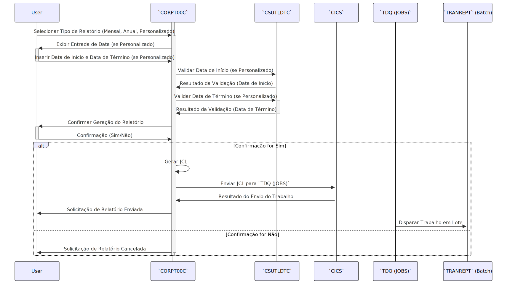

Gerado em: 1º de outubro de 2024
Título do Documento: Submissão de Relatório de Transações CardDemo - Especificação do Programa
Descrição Resumida:
Este documento descreve as especificações para um programa COBOL que facilita o envio online de trabalhos em lote para gerar relatórios de transações. Os usuários podem selecionar períodos predefinidos de relatório (mensal, anual) ou definir um intervalo de datas personalizado. O programa valida as entradas do usuário, constrói instruções JCL (Job Control Language) com base nas seleções e envia o trabalho para uma fila para processamento em lote.
Histórias do Usuário:
Como analista de negócios, preciso gerar relatórios de transações resumidos para períodos específicos para analisar tendências e desempenho.
Épico Relacionado:
5 - Relatórios e Análise
Requisitos Técnicos:
- Seleção do Tipo de Relatório: O programa apresenta ao usuário opções para escolher entre três tipos de relatório: Mensal, Anual ou Personalizado.
- Relatório Mensal: Gera um relatório para o mês atual.
- Relatório Anual: Gera um relatório para o ano atual.
- Relatório Personalizado: Permite que o usuário especifique uma data de início e uma data de término para o relatório.
- Validação da Entrada de Data: O programa valida as datas inseridas pelo usuário para relatórios personalizados.
- Validação de Formato: Garante que as datas inseridas estejam em conformidade com o formato
YYYY-MM-DD.
- Validação Lógica: Verifica se a data de início não é posterior à data de término.
- Validade da Data: Verifica se as datas inseridas são datas de calendário válidas.
- Geração de JCL: O programa constrói dinamicamente instruções JCL para o trabalho em lote com base nas seleções do usuário.
- Parâmetros do Relatório: O JCL inclui parâmetros para a data de início e término do relatório, que são preenchidos com base na entrada do usuário.
- Submissão de Trabalho: O programa envia o JCL gerado para um TDQ chamado
JOBS para processamento em lote.
- Confirmação do Usuário: Antes de enviar o trabalho, o programa solicita ao usuário que confirme sua solicitação.
- Tratamento de Erros: O programa inclui mecanismos de tratamento de erros para lidar normalmente com entradas inválidas ou erros do sistema durante o envio do trabalho.
- Interação com a Tela: O programa interage com o usuário por meio de mapas CICS, fornecendo uma interface orientada por menu para seleção de relatório e entrada de data.
- O programa usa o mapa
CORPT0A e o conjunto de mapas CORPT00 para tratamento de tela.
- Dependências Externas:
CSUTLDTC: Um programa utilitário usado para validação de data.TRANREPT: O programa em lote responsável por gerar o relatório de transações.
Modelos Relacionados
Não disponível.
Configurações:
WS-TRANSACT-FILE: TRANSACT (Nome do arquivo para o arquivo de transação)WS-DATE-FORMAT: YYYY-MM-DD (Formato de data)JOB-DATA:
JOB-DATA-1: Contém o modelo JCL para o trabalho de geração do relatório.
PARM-START-DATE-1: Parâmetro de data de início no JCL (passado de WS-START-DATE).PARM-END-DATE-1: Parâmetro de data de término no JCL (passado de WS-END-DATE).PARM-START-DATE-2: Parâmetro de data de início no JCL (passado de WS-START-DATE).PARM-END-DATE-2: Parâmetro de data de término no JCL (passado de WS-END-DATE).
JOB-DATA-2: Redefine JOB-DATA-1 para acessar linhas JCL individuais.
CSUTLDTC-PARM:
CSUTLDTC-DATE: Data de entrada para validação (passada de WS-START-DATE ou WS-END-DATE).CSUTLDTC-DATE-FORMAT: Formato de data usado para validação (passado de WS-DATE-FORMAT).
WS-REPORT-NAME: Armazena o nome do tipo de relatório selecionado (por exemplo, “Mensal”, “Anual”, “Personalizado”).WS-START-DATE: Armazena a data de início do relatório.WS-END-DATE: Armazena a data de término do relatório.
Melhorias de Código:
- Modularização: Divida o parágrafo
PROCESS-ENTER-KEY em parágrafos menores e mais gerenciáveis para cada tipo de relatório. Isso melhora a legibilidade e a manutenção do código.
- Consolidar a Validação de Data: Crie um parágrafo separado para a lógica de validação de data, que pode ser reutilizado para as datas de início e término, reduzindo a duplicação de código.
- Aprimorar Mensagens de Erro: Forneça mensagens de erro mais informativas ao usuário, indicando o problema específico com sua entrada. Por exemplo, em vez de “Data inválida”, especifique “Formato de data inválido. Use AAAA-MM-DD.”
- Log: Implemente um mecanismo de log para registrar envios de trabalhos bem-sucedidos, erros encontrados e outros eventos relevantes. Isso auxilia na depuração e monitoramento da atividade do sistema.
Melhorias de Segurança:
- Limpeza de Entrada: Implemente a limpeza de entrada para evitar vulnerabilidades como injeção de SQL ou cross-site scripting (XSS) se o aplicativo lidar com a entrada do usuário dinamicamente no futuro.
- Controle de Acesso: Imponha medidas rígidas de controle de acesso para restringir a funcionalidade de geração de relatórios apenas a usuários autorizados.
IMPORTANTE: Qualquer nome ou valor no resultado precisa ser colocado entre crases como exemplo.
Diagrama Conceitual:

–Made by “Smart Engineering” (by Compass.UOL)–